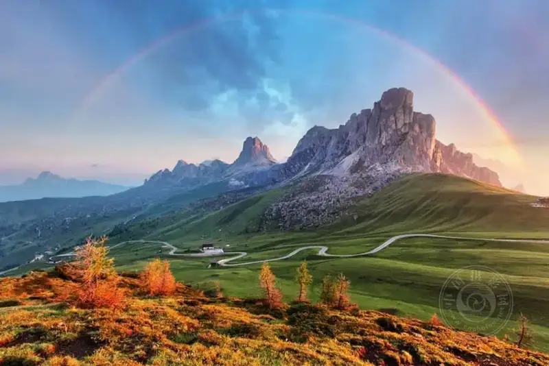
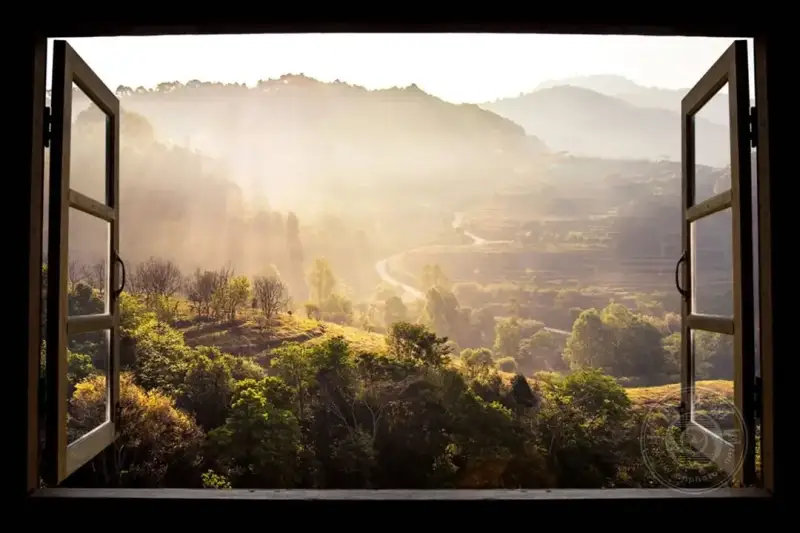
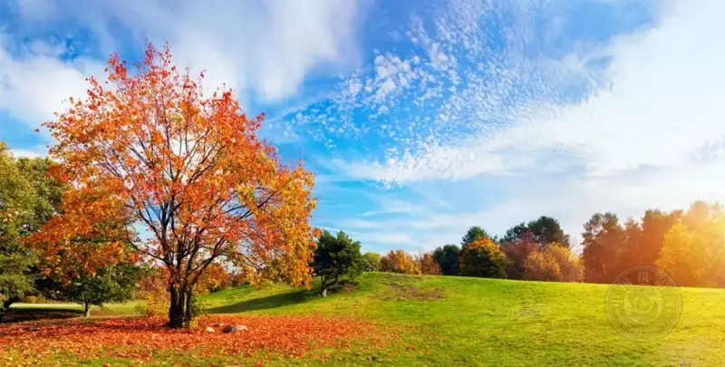
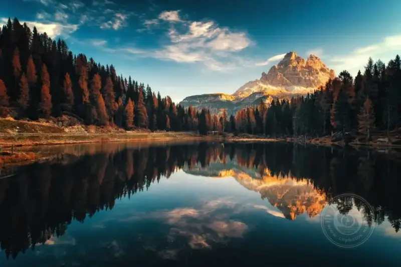
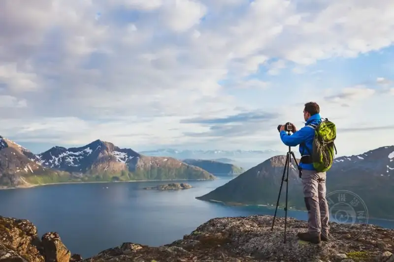
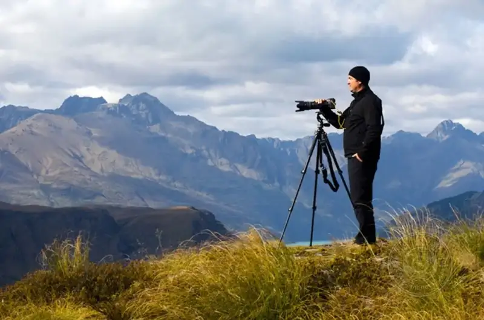
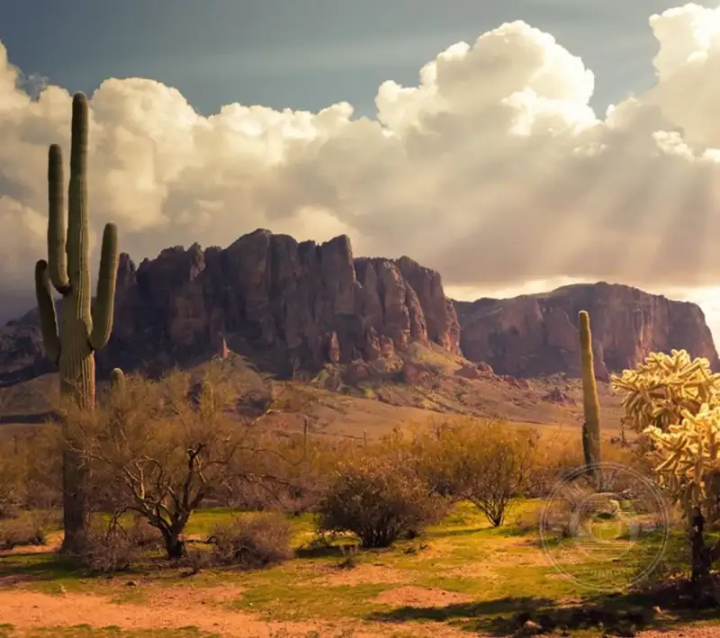

Welcome, explorers!
It is time to dust off your camera bag and set out on the paths few people walk. Look through that trusted lens, feel the pulse of unknown places, and freeze the scenery that stirs the soul. Welcome to the wonderful world of landscape photography. Here you are not just a recorder. You are a poet of nature.

Landscape photography is more than "taking a picture"
It is a translation. It turns the spirit of mountains, rivers, and seas into a visual language that moves people. A strong landscape image lets the viewer hear the wind and smell the earth.
It can be a raw hymn to the wild, or a complex poem of the city. This art pushes you to go out and fit the whole world into your viewfinder.

The traps every beginner meets
The view before you moves you to tears, but the photo comes out flat as a blank sheet? Do not be down. This road is one everyone walks.
Check these common symptoms:
✅ The light looks flat, with no layers
✅ The framing feels off, and you do not know where to put the subject
✅ The photo turns soft when you zoom in
✅ The image feels flat, with no sense of being there
Here is the cure. The tips below are your own personal photography guide.
Composition: the conductor of your frame
Composition is the skeleton of a photo. It decides where the viewer's eye goes, and what it sees.
1. The rule of thirds: the skill every beginner must learn
Cut the frame twice across and twice down, to make a nine-part grid. Place the most important element at one of the four intersections.
● The horizon? Place it at the upper third or the lower third. Do not put it in the exact middle.
● A tree, a rock? Put it on the left or right third line.
2. The magic of foreground: say goodbye to the "flat"
Put something at the very front of the frame, such as a few wildflowers or a pile of rocks with distinct texture.
This adds 3D depth to the photo. It leads the eye from near to far on a visual journey.
3. The horizon: keep it steady, do not tilt it
A tilted horizon can ruin a great photo in an instant.
● Is the sky beautiful? Lower the horizon.
● Does the ground tell more of the story? Raise the horizon.
● The key rule: Keep it level!

The alchemy of light and shadow: turn the ordinary into the magical
Light is the soul of landscape photography. Learn to master it, and you are more than halfway there.
● The golden hour: God's palette
The hour after sunrise and before sunset. The sunlight is warm gold, and the shadows stretch long.
• Try placing the sun behind, beside, or directly in front of the subject. The result is very different.
• Play with the clash of warm and cool tones. The image gains drama.
● The blue hour: a quiet dreamland
The short moment before sunrise and after sunset. The sky turns a deep sapphire blue.
• The light is dim then, so use a tripod and a long exposure to capture a mysterious, airy mood.
● "Bad" weather, good photos!
Do not pack the camera at the first cloudy or rainy day. Thin mist, dark clouds, and the hush before a storm are all great material.
Remember: extreme weather often brings extreme images.

Three advanced tools: make your craft match your taste
1. Long exposure: pull time into threads
Leave the shutter open for seconds, or even minutes.
• Flowing water becomes silk, clouds become brushstrokes, and crowds become ghostly shapes.
• This is a must for night scenes and starry skies.
2. Deep depth of field: sharp from front to back
For landscapes, do not use a wide aperture such as f/1.8. Stop the aperture down to f/16 or f/22.
This keeps everything sharp, from the rock at your feet to the snowy mountains far away. The frame fills with detail.
3. Catch some motion: bring the photo to life
Flying birds, swaying wheat fields, and rushing rivers. Add a touch of motion to a still frame, and the photo fills with life at once.

Gear list: your comrades
• Tripod: the savior of sharpness. Without it, long exposures and low-light shooting are basically off the table.
• Polarizing filter: like putting sunglasses on the lens. It makes the sky bluer and cuts the reflection on water.
• ND filter: the tool for long exposure in sunlight. It turns flowing water misty in broad daylight without overexposing.
• Wide-angle lens: the standard for landscapes. It takes in the grandest possible scene.

The inner rules only experts know
• Patience matters more than the shutter: waiting an hour, or even a whole day, for a beam of light to break through the clouds is normal.
• Look first, then shoot: do not rush the shutter. Ask yourself, "What is the soul of this scene? What story do I want to tell?"
• See the world from a new angle: shoot from the ground, or climb high. Do not always stand, because that is the view most people have.

Post-processing: give the photo a second life
Shooting is the first half, and post-processing is the second.
1. Basic adjustments: shoot in RAW. This gives you huge room to work. Adjust the exposure, and bring back detail in the shadows and highlights.
2. Color and contrast: raise saturation and contrast a little to make the image lively, but do not go over the top.
3. Noise reduction and sharpening: check the noise at the end, and sharpen a little to make the detail stand out.
Set out, photographer!
The knowledge is yours. What is left is to go out and shoot.
There is no shortcut in photography, but every detour counts. When you start to see the world through a photographer's eye, you will find beauty everywhere.
May you capture the light in your heart.